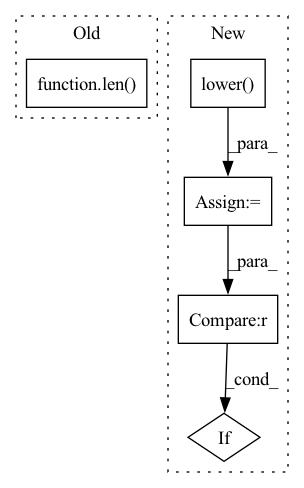

Pattern ID :13481
Before Change
image = np.array(image)
if np.amax(image) > 1:
image = image/255
if len( image.shape) < 2:
print("There are not enough edge maps in the channels to choose from")
return np.dstack((image, image, image))
if (np.array_equal(image[:, :, 0], image[:, :, 1])After Change
def __call__(self, image):
image = max_one(image)
if isinstance(self.edge_mode, list):
edge_mode = [x.lower() for x in self.edge_mode]
if "all" in edge_mode or "normal" in edge_mode or "a" in edge_mode or "n" in edge_mode:
edge_mode = random.choice(["dollar", "hed", "bdcn"])
else:
edge_mode = edge_mode[random.randint(0, len(edge_mode)-1)]In pattern: SUPERPATTERN
Frequency: 4
Non-data size: 5
Instances Fragment ID: 45470341
Project Name: nikosefth/im2rbte
Commit Name: 55c58d93ea0e568299123a57be6648f99f7d0167
Time: 2022-01-09
Author: nikos.efth@hotmail.com
File Name: augmentations.py
M Class Name: EdgeDetector
N Class Name: EdgeDetector
M Method Name: __call__(2)
N Method Name: __call__(2)
M Parent Class: object
N Parent Class: object
M File Name: augmentations.py
N File Name: augmentations.py
M Start Line: 231
M End Line: 253
N Start Line: 231
N End Line: 248
Before Change
raise ValueError(f"Unknown trace to show: {trace}. Known traces: {list(traces_to_indexes.keys())}")
if fig is None or axes is None:
fig, axes = plt.subplots(len( traces_to_show) + 1, 1, figsize=(15, 8))
else:
assert len(axes) == len(traces_to_show) + 1, f"axes must have length {len(traces_to_show) + 1}"
axes[0].plot(errors.detach().cpu().numpy())After Change
target = torch.squeeze(target).numpy().T
traces_to_show = kwargs.get("traces_to_show", ["error_quad", "best", "most_var", "worst"])
traces_to_show = [t.lower() for t in traces_to_show]
plot_error_quad = "error_quad" in traces_to_show
traces_to_indexes = {
"error_quad": None,
"best" : indices[0],
"worst" : indices[-1],
"most_var": var_diff_indices[0],
}
traces_to_names = {
"error_quad": "Squared Error [-]",
"best" : "Best",
"worst" : "Worst",
"most_var": "Most Var",
}
for i, trace in enumerate(traces_to_show):
traces_to_show[i] = trace.lower()
if "typical" in trace:
typical_idx = int(trace.split("_")[1])
traces_to_indexes[trace] = typical_indices[typical_idx]
traces_to_names[trace] = f"Typical {typical_idx}"
if trace not in traces_to_indexes:
raise ValueError(f"Unknown trace to show: {trace}. Known traces: {list(traces_to_indexes.keys())}")
given_names = kwargs.get("traces_to_show_names", [traces_to_names[t] for t in traces_to_show])
assert len(given_names) == len(traces_to_show), "traces_to_show_names must have the same length as traces_to_show"
for trace, trace_name in zip(traces_to_show, given_names):
traces_to_names[trace] = trace_name
if plot_error_quad:
traces_to_show.remove("error_quad")
n_plot = len(traces_to_show) + int(plot_error_quad) Fragment ID: 45470340
Project Name: neurotorch/neurotorch
Commit Name: 53f1424222bf470ccfed91290df8c9e1ac3e616b
Time: 2022-11-11
Author: 50332514+JeremieGince@users.noreply.github.com
File Name: src/neurotorch/visualisation/time_series_visualisation.py
M Class Name: Visualise
N Class Name: Visualise
M Method Name: plot_timeseries_comparison(10)
N Method Name: plot_timeseries_comparison(10)
M Parent Class:
N Parent Class:
M File Name: src/neurotorch/visualisation/time_series_visualisation.py
N File Name: src/neurotorch/visualisation/time_series_visualisation.py
M Start Line: 411
M End Line: 467
N Start Line: 412
N End Line: 481
Before Change
for neighbour in list_of_neighbours:
if neighbour["text"] not in vocabulary:
vocabulary[neighbour["text"]] = len( vocabulary)
neighbours.append(vocabulary[neighbour["text"]])
neighbour_cords.append(
[After Change
for neighbour in list_of_neighbours:
text = neighbour["text"].lower()
if text not in vocabulary :
if str_utils.is_number(text):
neighbours.append(vocabulary["<NUMBER>"])
else: Fragment ID: 45470332
Project Name: praneet9/representation-learning-for-information-extraction
Commit Name: 3889bd818454de19f19de6738a440d23b2c148b5
Time: 2021-01-26
Author: tanmayvakare@gmail.com
File Name: utils/preprocess.py
M Class Name: AnonimousClass
N Class Name: AnonimousClass
M Method Name: get_neighbours(3)
N Method Name: get_neighbours(3)
M Parent Class:
N Parent Class:
M File Name: utils/preprocess.py
N File Name: utils/preprocess.py
M Start Line: 13
M End Line: 17
N Start Line: 13
N End Line: 28
Before Change
return None
try:
parsings = pyconll.load_from_string(processed)
if len( parsings) == 0:
return None
except:
return NoneAfter Change
for parsing0 in pyconll.load_from_string(processed):
parsing = []
for token in parsing0:
utoken = token.form.lower()
if utoken in ["чтоб"] :
// Исправляем ошибки разметки некоторых слов в UDPipe.Syntagrus
parsing.append(UDPipeToken(token, upos="SCONJ", tags=[]))
elif utoken in ["средь"]: Fragment ID: 45470330
Project Name: koziev/verslibre
Commit Name: ca9ba4038492c4dcbff8898c51821ff9b49db9a5
Time: 2021-12-20
Author: kelijah@yandex.ru
File Name: py/generative_poetry/udpipe_parser.py
M Class Name: UdpipeParser
N Class Name: UdpipeParser
M Method Name: parse_text(2)
N Method Name: parse_text(2)
M Parent Class:
N Parent Class:
M File Name: py/generative_poetry/udpipe_parser.py
N File Name: py/generative_poetry/udpipe_parser.py
M Start Line: 20
M End Line: 30
N Start Line: 38
N End Line: 59